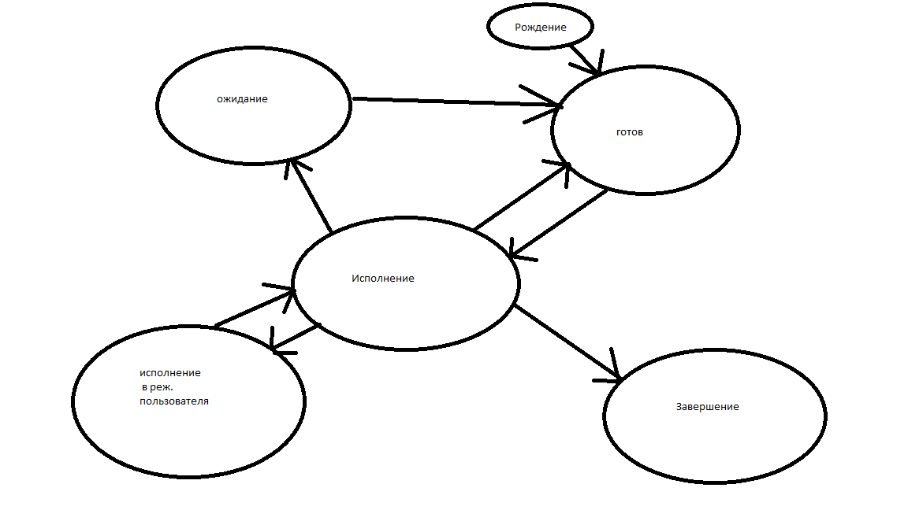

25.12.2014
Алгоритмы планирования
Работа алгоритма планирования зависит от используемой функции выбора
Три величины:
- Время затраченное системой
- время затраченное на исполнение
- Общее время обслуживания, требующееся процессору (сколько времени требуется затратить на обработку процесса).
Режим решения подразделяют на две категории, в которой могут работать алгоритмя планирования
- Вытесняющие
- Не вытесняющие (пока процессор полностью не обработает процесс, он
никуда не уйдет)
first Come, first served (FCFS)- алгоритмы планирования - первый пришел первым обслужился.
Это невытесняющее планирование - процесс, получивший в свое распоряжение процессор, занимает его до истечения своего текущего
cpu burst(промежут времени непрерывного использования процессора).
I/O (input/output)-промежуток ожидания ввода вывода
a=1
b=2
read c cpu burst
ожидание
ввода
a=a+c+b
print
Время входа в систему
Процесс А на 5 еденице
Процесс В на 1 секунде
Процесс С на 3 секунде
CPU:100,400,1,4 (процессы)
a=5
b=1
c=3
| 1 |
2 |
3 |
4 |
5 |
6 |
7 |
8 |
9 |
| 1 |
2 |
3 |
4 |
5 |
6 |
7 |
8 |
9 |
| 1 |
2 |
3 |
4 |
5 |
6 |
7 |
8 |
9 |
| 1 |
2 |
3 |
4 |
5 |
6 |
7 |
8 |
9 |
- Преимущества - простота реализации
- Недостатки
- среднее время ожидания
- среднее время выполнения
зависят от порядка расположения процессов в очереди
при наличии процессов длительных машин, короткие процессы, которые пришли в состояние ожидания.
После рождения переходят в состояние готовности(исполнения).
Короткие процессы будут ожидать состояния готовности.
Такой алгоритм не применим для систем разделения времени.
--
--
Алгоритм Round Robin(круглая карусель)
процессы подсаживаются на некую карусель (рис.2)
Рис. 2

Пусть у нас есть процессы p0, p1, p2
Пусть p0 = 13
p1 =4
p2=1
| Время |
1 |
2 |
3 |
4 |
5 |
6 |
7 |
8 |
9 |
10 |
|
1 |
2 |
3 |
4 |
5 |
6 |
7 |
8 |
9 |
10 |
| p0 |
И |
И |
И |
И |
И |
|
|
|
|
|
|
| p1 |
|
|
|
|
И |
И |
И |
И |
Г |
|
|
| p2 |
|
|
|
|
|
|
И |
И |
И |
И |
|
Round robin (4)
| Время | 1 | 2 | 3 | 4 | 5 | 6 | 7 | 8 | 9 | 10 |
| P0 | И | Г | Г | И | Г | Г | И |
Г | ГИ | Г | Г | И | Г | Г |
| p1 | Г | Г | И | Г | Г | И | Г | Г | И |
Г | Г | И | Г | Г |
| p2 | Г | И | Г | Г | И | Г | ГИ | Г |
Г | И | Г | Г |
Round robin (1)
Алгоритм (SJF) Shortest Job RR First
Невытесняющий
| Время | 1 | 2 | 3 | 4 | 5 |
6 | 7 | 8 | 9 | 10 |
| P0 |
| p1 | Г | Г | Г | Г | И | И | И | И | И |
| p2 | Г | И | И | И |
| p3 | Г | Г | Г | Г | Г | Г | Г | Г | Г |
Быстрый алгоритм
При невытесняющем планировании процессор предоставляется избранному процессу на све требующееся ему время независимо от событий в системе.
учитывается появление новых процессов во время выбранного процесса.
Если cpu нового процесса меньше, чем остаток cpu burst исполняющегося, то испол. процесс вытесняется новым.
Алгоритм работы первой момент появления в очереди
| (SJF) | 0 | 1 | 2 | 3 | 4 | 5 | 6 | 7 | 8 | 9 | 10 |
| P0 | 6 | 5 | И | Г | Г | Г |
| P1 | 2 | 2 | И | И |
| P2 | 5 | 8 |
| P3 | 5 | 0 | И | И | И | И | И |
ТИ время нахождения И-того пользователя в системе
Тау и-тое суммарное процессорное время процессов и-того пользователя
Если тау и-тое меньше и-тое деленное на Н
пользователь обделен
если тау и-тое больше чем т и-тое деленное на н
т-итое умноженное на н
На исполнение выбираются готовые процессы пользователя с наименьшим коэффициентом справедливости. Такой алгоритм сложен
3)Алгоритм приоритетное планирование - каждому процессу в процессор
выделяется соответствие с приписынамым к нему числовым значением приоритетом. Параметры для назначения приоритета ббывают внешние и внутренние.
Политика изменения приоритетов бывает : статическая и динамическая.
Статический приоритет - мы его назначили и неизменяем.
| CPU момент появления | Приоритет |
| P0 | 6 | 0 | 4 |
| P1 | 2 | 2 | 3 |
| P2 | 5 | 6 | 2 |
P3 5 2 1
P0
P1 ИИ
P2 ИИИИИ
P3ИИИИИ
Находится в состоянии готовности
многоуровневые очереди(multi level)
рис.3
---системные процессы с приоритетом 0 с алгоритмом Round Robin
---процессы преподавателя с приоритетом 2 с алгоритмом round robin
---фоновые процессы с приоритом 3 с алгоритом fcfs
---процессы студентом с приоритом 4 с алгоритмом rr
многоуровневые очереди с обратной связью
очередь, алгоритм, приоритет.
Каждый процесс будет в своей очереди.
Для полного описания требуют
Количество очередей в состоянии готовность
Должен быть общий алгоритм между очередями
алгоритмы планирования внутри очередей
Нужно задать куда поместить родившийся процесс и правила перевода процесса из одной очереди в другую
уровни планирования процессов
долгосрочное планирование - это планирование заданий
среднесрочное планирование - это swapping
краткосоровное планирование - это использование процессов
Цели планирования:
1)справедливость - гарантировать каждому заданию, каждому процессу некоторую часть процесса.
2)эффективность -
3)сокращение полного времени выполнения general time
время от старта процесса до самого его завершения
4) сокращение времени ожидания
5) сокращение времени отклика (response time)
Свойства алгоритмов планирования:
1)предсказуемость - одно и то же задание должно выполняться приблизительно за одно и то же время
2)минимальные накладные расходы - сокращение времени работы самого алгоритма планирования
3)сбалансированная загрузка ресурсов системы спреподчтением процессов, которые будут занимать малоиспользуемые ресурсы
4)маштабируемость
Домашнее задание :
нарисовать графики выполнения процессов по алгоритму по каждому алгоритму
написать свою программу, которая это реализует.
fcfs
процессов четыре
P0 7
P1 2
P2 9
P3 12
round robin с квантом времени (3)
SJF(невытесняющий)
SJF (3 0 1 2 )время выполнения
SJF (1 2 3 4)
продолжительность cpu 7 2 9 12
4) сокращение времени ожидания